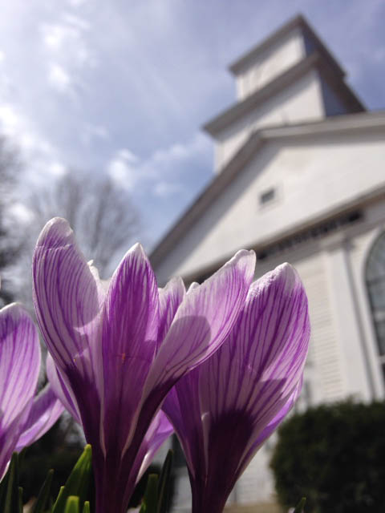

Come on out for our spring cleanup!
Posted Wed, May 12, 2021; updated Wed, Dec 14, 2022

May Day has come and gone, and Full-On Spring is upon us! As more people are getting vaccinated, Covid numbers are going down, and the world feels as though it is opening up a bit again, we anticipate some activities at the Montague Common Hall may begin to be possible.Things we are dreaming about:
If you are interested in helping make any of these dreams come true, please be in touch! The Common Hall continues to survive and thrive because people like you lend your enthusiasm, vision, and elbow grease to keeping this vital community center going, even in rough times! Thank you, thank you!
Spring Clean-Up this weekend!
Saturday, May 15th from 10am-1pm
We will have both indoor and outdoor tasks, depending on your vaccination status, and comfort level. We will ask that everyone wear a mask, and practice social distancing according to whatever Covid precautions the CDC is recommending as of Saturday.
This is generally a really fun way to meet your neighbors; and the range of tasks offers something for everyone. It is a fast, cheap, and easy way to get a hit of the sweet feeling you get from building and maintaining community – together! In-person! IRL! Just like in the olden days.
Please bring garden tools and any plants you would like to donate, if you want to play in the MCH garden. We will have cleaning supplies and tools for inside tasks.
We can’t wait to see you!
You have Questions? We have Answers!
Email us at info@montaguecommonhall.org